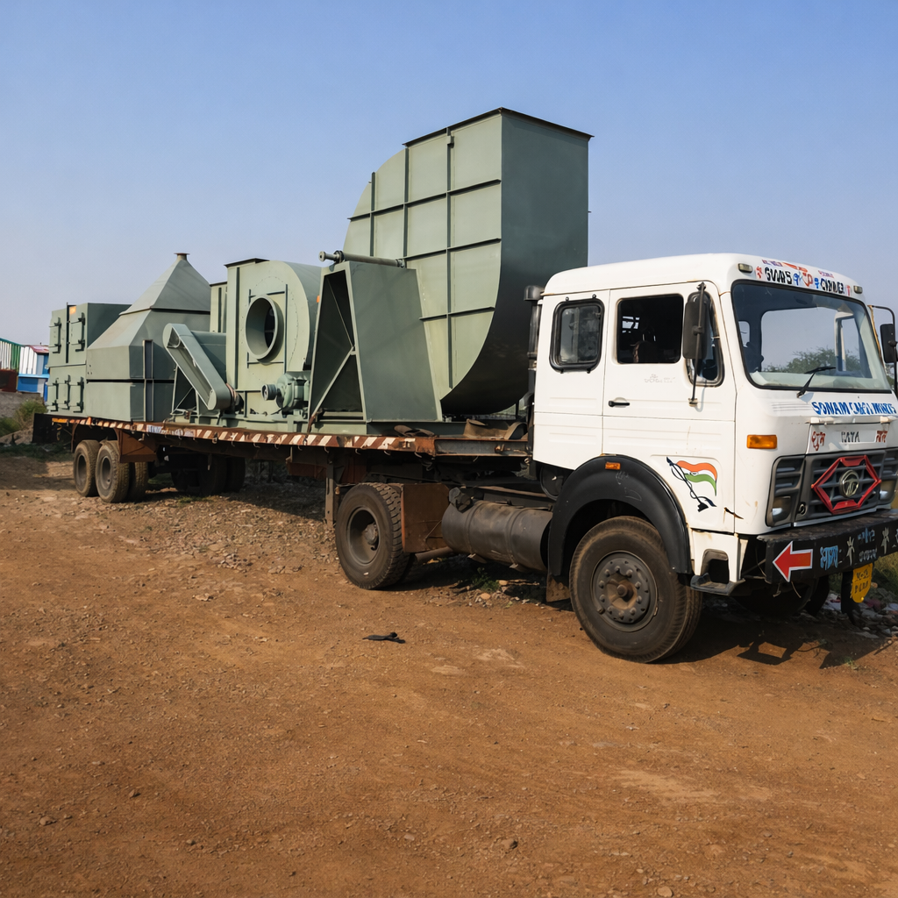

Industrial Dust Collection Systems for Factories in UP | Safety Experts
For industrial facilities in Uttar Pradesh, airborne dust is a major safety hazard. Failing to capture these particles at the source can lead to fires and serious health issues. As recognized Dust Collection System Experts, our team recently completed a pulse-jet bag filter installation for a woodworking unit in UP, reducing ambient dust levels by 98%.

The Critical Need for Dust Extraction
Industries like woodworking and metal grinding generate huge volumes of particulate matter. Our 8+ years of engineering expertise allows us to design Industrial Ventilation System Installations that prevent dust from settling on machinery, ensuring long-term operational efficiency.
How Our Dust Collection Systems Work
1. Source Capture: Custom hoods designed for your specific machinery. Learn about our Ventilation Solutions.
2. High-Performance Ducting: As an Industrial HVAC Contractor in Moradabad, we use GI/SS ducting designed with precise air velocities.
3. Pulse-Jet Bag Filters: Achieve 99.9% filtration. Check our AHU vs HVAC Guide for system integration.
Is Your Factory Air Purity Under Standard?
Protect your workers and your machinery with a precision-engineered dust extraction system.
Request a Technical QuoteFrequently Asked Questions
What industries need dust collection systems in UP?
Woodworking, metal grinding, and chemical processing units in Uttar Pradesh require robust extraction systems for safety.
What is the efficiency of pulse-jet bag filters?
Our systems achieve 99.9% filtration efficiency, ensuring compliance with all local environmental norms.
Compliance with UP Environmental Norms
The Uttar Pradesh Pollution Control Board has strict guidelines for industrial emissions. Our systems are designed to meet and exceed these standards, ensuring your factory remains compliant and avoids heavy fines. By integrating our dust collectors with localized AHU Manufacturer in Uttar Pradesh expertise, we provide a complete air quality solution that includes both extraction and fresh air makeup.
Conclusion: Don't compromise on air quality. A dedicated dust collection system is an investment in safety, efficiency, and environmental responsibility. Partner with Aaron Air Care Engineering to design a system that works for your specific industrial needs.
Related Reading: Industrial Ventilation Guide | Back to Home